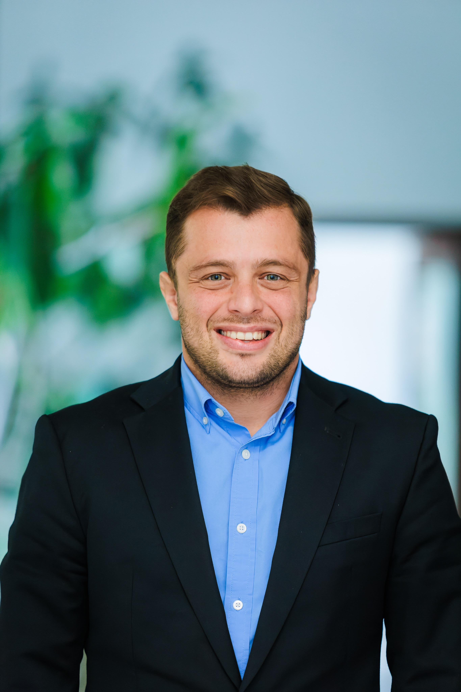

Sprijin companiile din Oil & Gas, construcții și industrie să respecte legislația și să implementeze sisteme eficiente HSEQ – de la documentație ISO până la coordonare operațională pe teren.
Solicită o ofertă
Sunt specialist HSEQ certificat NEBOSH, cu experiență în companii internaționale precum VINCI Energies, Rompetrol și SIAD.
Am coordonat sisteme de management HSEQ și proiecte complexe în domenii precum Oil & Gas, construcții industriale, infrastructură și producție.
Lucrez direct cu managementul companiilor pentru implementarea de soluții reale, nu doar documentație, având ca obiectiv reducerea riscurilor și atingerea standardului „Zero Accidente”.
Te pot ajuta să implementezi rapid un sistem conform și eficient, adaptat companiei tale.
Contactează-mă pe WhatsApp